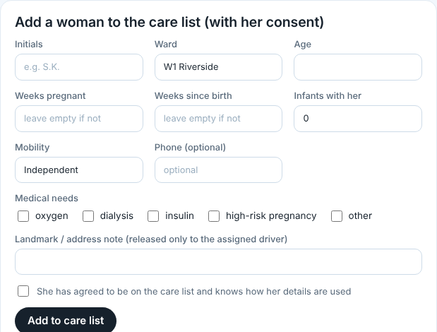
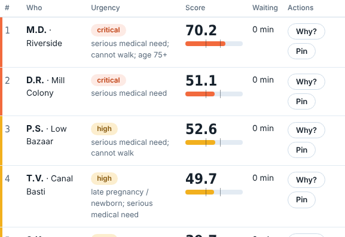
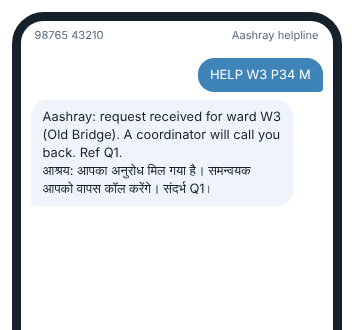

Before monsoon, health workers note which women would need a vehicle to get out, with their consent. When a flood alert goes out, Aashray ranks who leaves first and texts each driver.
This is the same scoring the console uses, run on the sample care list. As the river rises in the low-lying wards, women there move up. Someone bedridden and on oxygen stays near the top even when the water is low, because she cannot leave without help.
She adds a woman only after the woman agrees. The list holds initials, ward, and what the woman needs: a stretcher, a wheelchair, a late pregnancy, a newborn, dialysis.

Each woman gets a score out of 100 from her medical need, pregnancy or newborn, mobility, age, how bad the flood is in her ward, and how far the nearest open shelter is. Tap "Why?" on any row to see the points. The coordinator can pin someone higher.

Each vehicle receives a single message listing its pickups and drop-off shelter. A woman without a smartphone can text HELP W3 P34 or give a missed call, and a person calls her back before anyone is sent.

Prototype with sample data. SMS and voice calls are simulated. Built for the IEEE-MSB SAMWAD Ideathon, Problem Statement 5, by Abhinav Jain, VIT Bhopal University.